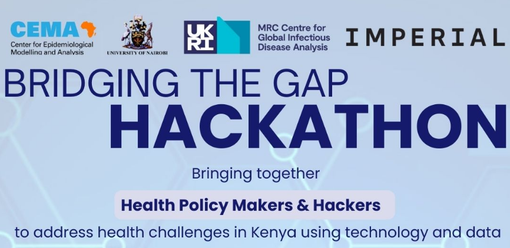
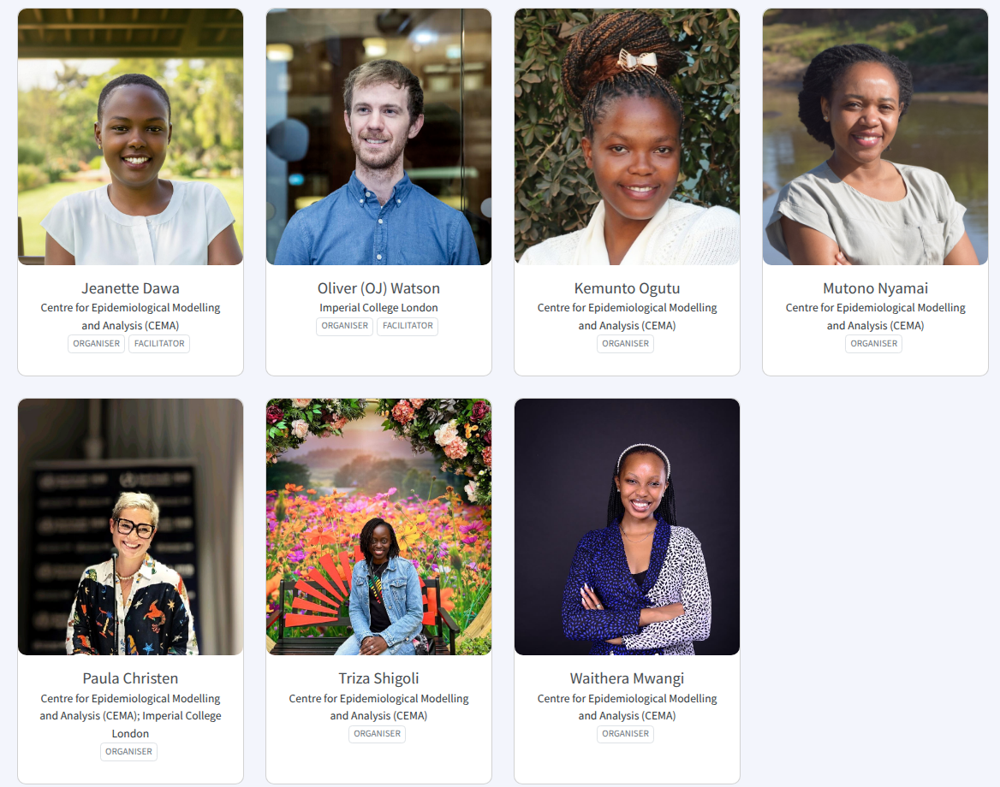
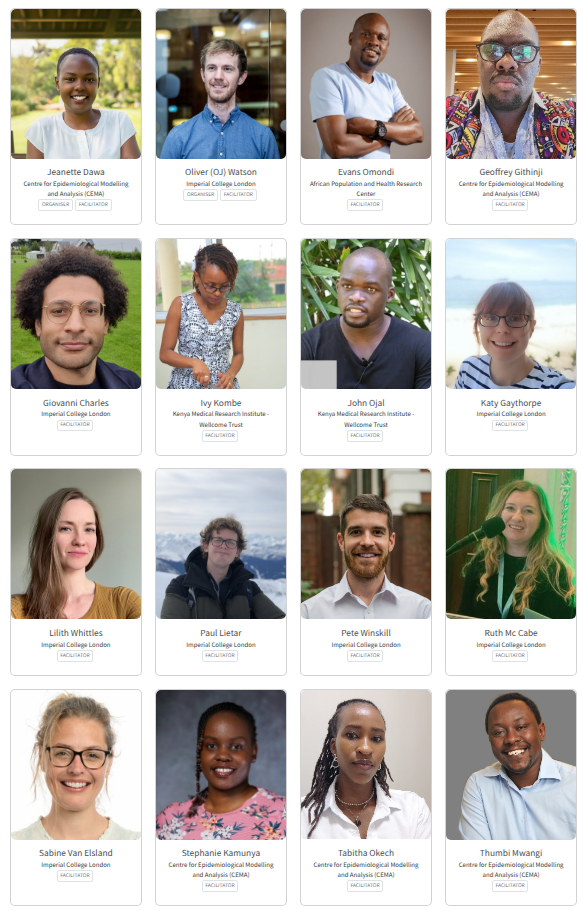
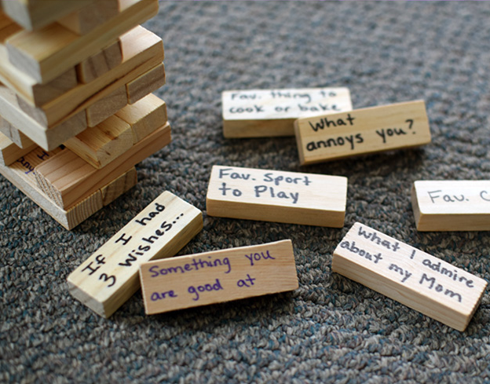
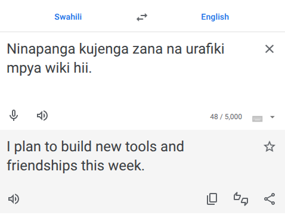
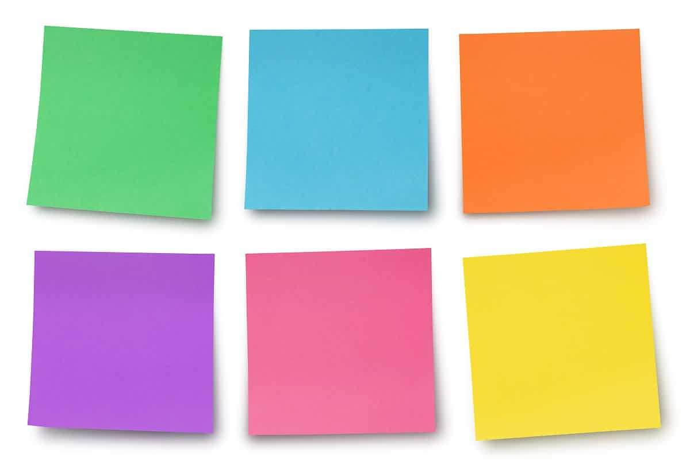

Bridging The Gap Hackathon
Please register and have some ☕ and 🍪
Karibu Sana & Welcome
- Who is here: Over 50 public health researchers, decision makers and software development experts from Kenya and UK.
- Why we’re here: To solve health policy needs in Kenya, foster new ideas, and make meaningful connections.
- What’s next: A week of collaboration, creativity, and ☕ & 🍪.
Housekeeping
- Useful Info:
- Facilities, plugs, fire exits, health needs, water etc
- Wifi:
- Network Name: NSC BY SWISS-BELHOTEL
- Password: safari2024
- Photographs:
- We will be taking photos throughout for social media. Smile! 📷
- Feedback and Questions:
Why are we here today?
- Saw the hackathon advertised and wanted to see what it was about.
- Wanted to leave the cold weather in the UK behind. 🥶 ✈️ ☀️
- To create free, open-source resources to support and facilitate evidence-informed decision making and address health policy needs in Kenya.
- All of the above
Why are we all here?
What brought us here is behind us - let’s try to focus on what we can do this week.
So let’s start by taking a moment to pause, breath and shift our focus to the space we are sharing this week.
Most importantly, this week is an opportunity to connect, share knowledge, and build useful tools and relationships from this hackathon.
What is a hackathon?
Meeting of individuals with diverse interests and skill sets, working in groups to build new software tools and solutions.
- Step 1: Sharing ideas for questions to answer by building new software tools
- Step 2: Sharing research skills and interests in the ideas shared
- Step 3: Identifying the top ideas and software to work on
- Step 4: Formation of groups to work on each identified project

Day 1 Schedule
- Foundations and Team Formation:
- 8.30 – 9.00: Registration
- 9.00 – 10.30: Grounding, Introductions & Ice Breaker Activities
- 11.00 – 12.00: Hackathon Challenge Presentations
- 12.00 – 13.00: Idea Generation & Skills Sharing
- 14.00 – 15.30: Challenge Refinement, Skills Matching & Team Building
- 16.00 – 17.00: End of Day 1 Debrief
- ☕ & 🍴 Breaks
- ☕️: Tea breaks: 10.30 – 11.00, 15.30 – 16.00
- 🍴: Lunch breaks: 13.00 – 14.00
Days 2 - 3 Schedule
- Coding and Collaboration
- 8.30 – 9.00: Grounding and plan for the day
- 9.00 – 10.00 (Day 2 only): Git and GitHub refresher
- 9.00 – 17.00: Dedicated time for project work in each working group, with guidance from facilitators.
- 16.00 – 17.00: “Debrief the Day”. Group updates and plans for tomorrow.
Day 4 Schedule
Presentations and Feedback
- 8.30 – 9.00: Grounding and plan for the day
- 9.00 – 13.00: Dedicated time for project work, with guidance from facilitators.
- 12.00 - 13:00 📷 Group Photo 📷
- 14.00 – 17.00: Presentations and feedback
- 18.30: Social/Dinner at Gaucho (Gaucho - Nairobi ?)
Day 5 Schedule
Refinement and Next Steps
- 8.30 – 9.00: Grounding and plan for the day
- 8.30 – 13.00: Project refinement based on feedback received
- 14.00 – 16:00: Planning for further development of tools and outputs:
- Conference Abstracts?
- Journal Submission?
- Grant Applications?
- 16.00 – 17.00: Closing remarks, final feedback and thanks
Debrief The Day
Each day will close by reflecting in groups and sharing updates.
- Discussing in our groups:
- What ground has been covered today?
- What the group will be working on tomorrow?
- What additional help may be needed?
- How can we help you?
- Creating an update (2-3 minutes) to share with everyone:
- What your group has been working on?
- Any outputs to demonstrate?
- Anything you have discovered?
- Any help that may be needed tomorrow?
Debrief The Day - Feedback
- Sharing updates with everyone:
- Each group will present any updates/questions
- Sharing feedback with organisers:
- Throughout the hackathon, please use the feedback page to share your feedback or ask any questions that you would like answered:
- At the end of the day, please also share any feedback as a group, which we will review overnight ready for the next day.
Introductions
Introductions
- Time to introduce yourselves (in 10s):
- Name
- City/County, Country
- Job Title and 1 area of interest
- “My name is OJ Watson. I am from London in the UK and I am a lecturer in infectious disease modelling, with a focus on malaria, at Imperial College London”
Introductions - Organizers

Introductions - Facilitators

- What are facilitators?
- Who are the facilitators in the room?
Ice Breaker Activity


- Icebreaker Jenga
- Split into groups of ~10
- Take turns removing a block from the tower
- Each block has a question on the block
- Answer the question and place the block on the tower
- Repeat until the tower falls over
- Split into groups of ~10
Hackathon Topic Presentations
- Cold Chain Capacity Monitoring:
- Streamline reporting and visualising vaccine cold chain capacity.
- Outbreak Alert Thresholds:
- Refining epidemic thresholds for measles outbreak detection.
- Data Quality Validation:
- Automating detection of anomalies in vaccine data for better accuracy.
- Schistosomiasis Elimination Strategies:
- Conduct cost-effectiveness evaluation of elimination strategies.
- Malaria Vaccine Deployment:
- Optimising malaria vaccination with with other interventions.
- Animal Surveillance Data Integration:
- Unified platform for real-time animal health data analysis and reporting.
Enjoy a well-deserved break!
Topic Reading
- Have a read of the topic presentations as well for more information.
- All information is on the hackathon website:
Idea Generation
- On the “Challenge Tables”, use the post-its to add brief descriptions of ideas or tools you think would be helpful in answering these topics?
- If you have ideas for other relevant questions or tools for this 5-day hackathon you would like to build then add these to the “Further Ideas Board”

Skill Identification
- On the “Skills Mirrors”, use the post-its to share:
- What research or technical/software skills you have?
- What questions you would like to work on?
- Your first name and initial of last name, e.g. Oliver W
- Your affiliation, e.g. CEMA
- Data Analysis & Statistics (Statistical analysis, Data analysis, Predictive modelling, Stochastic modelling)
- Machine Learning & AI (Machine learning, AI-driven solutions, Bayesian inference, Time-series prediction)
- Epidemiology & Modelling (Epidemiological modelling, Mathematical modelling, Infectious disease dynamics, Climate-sensitive VPDs)
- Public Health & Policy (Public health policy, Public health management, Evidence synthesis, Vaccine impact estimation)
- Health Economics (Health economics, Cost-effectiveness analysis)
- Software Engineering (Software development, R packaging,Python programming, Web applications)
- Data Engineering (Data algorithms, Database management, Interoperability, Integrations expert)
- Visualisation & Reporting (Data visualisation, Dashboards and tools)
- Communication & Knowledge Translation (Knowledge translation, Communications strategy)
- Project Management & Leadership (Project management, Leadership in public health)
Get Post-It Noting!
Challenge & Ideas Wall ⬅️
Brief descriptions of ideas
Skills Wall ➡️
Short skills description
🍴 Lunch Break 🍴
Project A: Cold Chain Capacity Monitoring
Key Proposed Tools/Ideas:
Develop IoT-based cold chain monitoring sensors. Example: “Add an indicator in KHIS for monthly reporting of cold chain capacity and equipment functionality.”
Create an app for real-time temperature alerts. Example: “Enable automated temperature monitoring with real-time notifications for deviations.”
Design an automated cold chain capacity planner. Example: “Develop predictive models to estimate cold chain needs based on vaccine demand trends.”
Assigned Participants:
- Philip M, Stephanie K, Bonventre A, Peninna N, Fathiya H, Peter M, Jackine N
Project B: Outbreak Alert Thresholds
Key Proposed Tools/Ideas:
Develop a user-friendly data visualisation dashboard. Example: “Create visuals to track outbreak alerts and response timelines.”
Automate data validation processes. Example: “Integrate systems to validate alert thresholds against historical data.”
Implement a centralised database for data integration. Example: “Develop a unified platform to consolidate outbreak reports from multiple regions.”
Assigned Participants:
- Stanley S, Giovanni C, Salmon G, Pius K, Ivy K, Florence A, Lydiah K, Amika P
Project C: Data Quality Validation
Key Proposed Tools/Ideas:
Create a data quality scoring system. Example: “Automate data validation checks for anomalies in health records.”
Design a dashboard for tracking data anomalies. Example: “Develop real-time analytics for monitoring data quality metrics.”
Automate alerts for outliers in data submissions. Example: “Enable system-generated notifications for inconsistencies in vaccination data.”
Assigned Participants:
- Ommet EO, Cosmas B, Muchiri Antony, Paul L, Katy G, Fred M
Project E: Malaria Vaccine Deployment
Key Proposed Tools/Ideas:
Create a vaccine deployment tracker. Example: “Track malaria vaccine rollout progress at the sub-county level.”
Develop GIS tools to map vaccine coverage. Example: “Visualise vaccine distribution areas to identify coverage gaps.”
Design an algorithm to optimise vaccine distribution. Example: “Simulate distribution scenarios to ensure equitable vaccine access.”
Assigned Participants:
- Tabitha O, Augustine M, Geoffrey G, Mumbua M, Daniel B, Pete W, Omar Ahmes, Anne K
Project F: Animal Surveillance Data Integration
Key Proposed Tools/Ideas:
Develop spillover risk mapping tools. Example: “Map high-risk areas for zoonotic disease spillovers based on surveillance data.”
Automate surveillance reporting systems. Example: “Streamline submission of surveillance data to improve reporting efficiency.”
Implement interoperability features between animal and human surveillance. Example: “Integrate animal health data into human surveillance platforms for coordinated response.”
Assigned Participants:
- Ryan M, Anne K, Purity K, Ruth M, Annah M, Mumbua M, Emmanuel O, Argni B
Project G: Workforce Estimation
Key Proposed Tools/Ideas:
Develop a workforce simulation tool. Example: “Model staffing requirements for vaccination campaigns.”
Create a training needs assessment platform. Example: “Identify skill gaps and design targeted training programs for health workers.”
Design a dashboard to monitor workforce metrics. Example: “Track workforce deployment and utilisation in real-time.”
Assigned Participants:
- Komundia G, Sabine van E, Ojal T, Penina MN, Francis M, Moses M
Internal Reflection:
For 3.15pm, please be able to answer the following:
- In your own words what does the challenge encompass? Can you describe it to the decision makers?
- What do you need from the decision makers to proceed:
- What data may you need? Can this data be shared? Or “dummy” data made?
- Do you need any additional software or general expertise?
- What is the outcomes/output the decision maker wants to see on Thursday?
End of Day 1 - after Tea
Discussing in your groups: What ground has been covered today? What the group will be working on tomorrow? What additional help may be needed?
Creating an update (2-3 minutes) to share with everyone: What your group has been working on? Any outputs/ideas to share?
Enjoy a well-deserved break!
End of Day 1 - After Tea
- Github Usernames and Repositories:
- Email your github username to paula.christen@cema.africa
- We need everyone who is not a decision maker to be on Github :)
- https://github.com/CEMA-MRC-Hackathon
- Uploading Project Plan to Github Repositories:
- Each project family has a unique Github repository
- Please add your projet plan fully to the repository
- This can be in any form (photos of white board, documented README)
- Creating an update (2-3 minutes) to share with everyone:
- Nominate someone in your group to share your updates
- What your group has been working on?
- Any outputs to demonstrate?
- Anything you have discovered?
- Any help that may be needed tomorrow?
Debrief The Day - Feedback
- Sharing updates with everyone:
- Each group will present any updates/questions
- Sharing feedback with organisers:
- Throughout the hackathon, please use the feedback page to share your feedback or ask any questions that you would like answered:
- At the end of the day, please also share any feedback as a group, which we will review overnight ready for the next day.